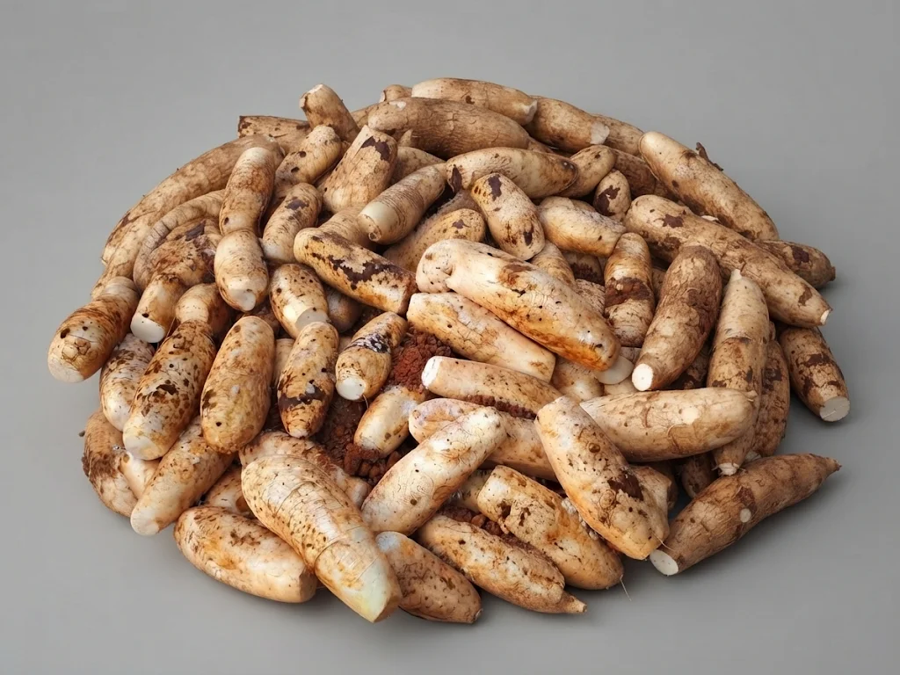
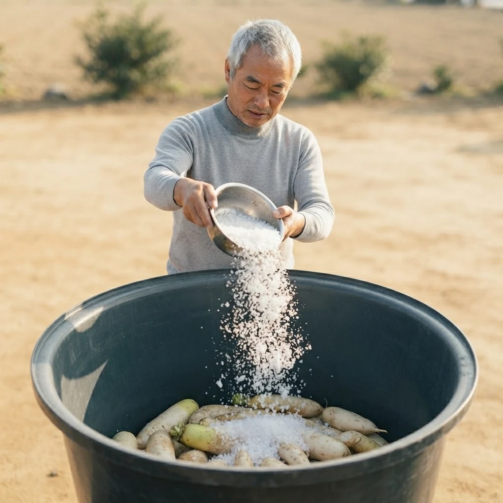
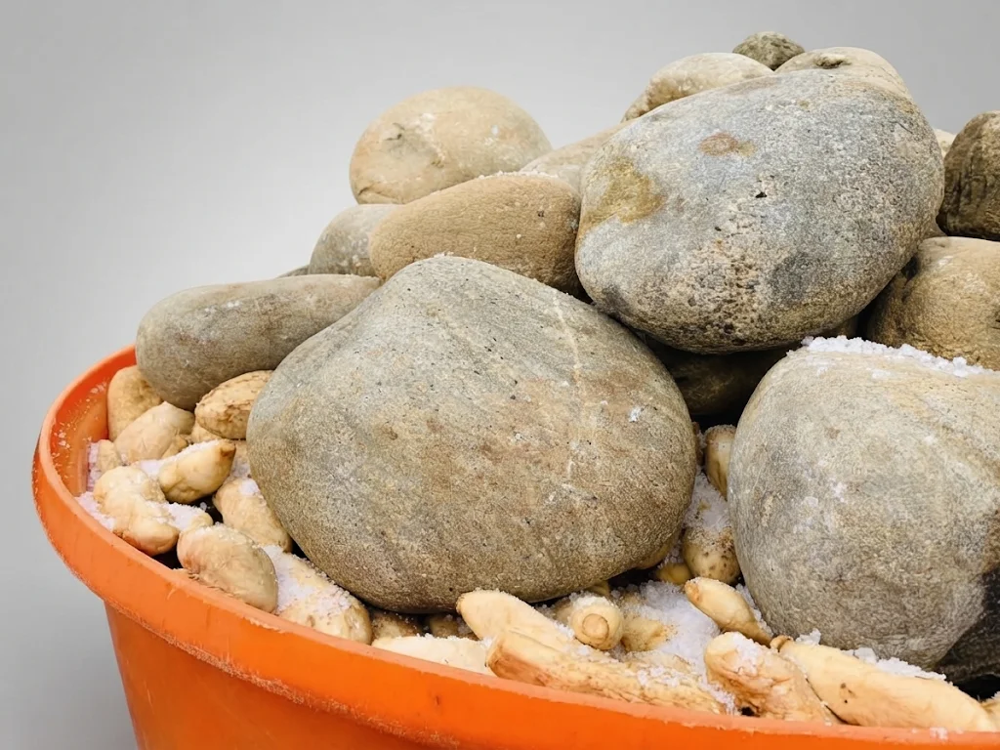
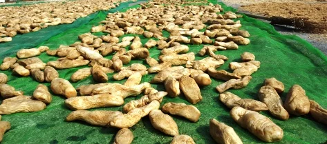
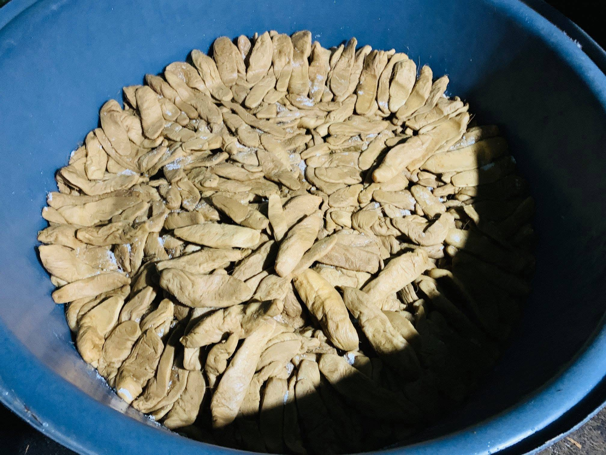

從田裡開始
清水紅土秋冬蘿蔔
我們在清水的大肚山紅土地帶種蘿蔔。這裡的紅土有著透水性極佳的土質，種出來的蘿蔔纖維紮實。
秋冬天氣轉涼，蘿蔔長得慢，甜味也更明顯。

清水整條日曬蘿蔔
秋冬拔起的白蘿蔔，挑得過阿公的眼，才有機會整條進甕。這道清水菜脯，從田裡做到曬埕，常常要等上幾個月。

從田裡開始
我們在清水的大肚山紅土地帶種蘿蔔。這裡的紅土有著透水性極佳的土質，種出來的蘿蔔纖維紮實。
秋冬天氣轉涼，蘿蔔長得慢，甜味也更明顯。
步驟 01
在田裡用手挑。太大太小，後面醃曬就不容易均勻；形狀不漂亮、有缺損、裂紋及表皮不光滑的也會挑掉。
約每十條只有三條能入選，大小要接近、外形要飽滿，外表完好無損。

步驟 02
用食品用粗鹽撒在整條蘿蔔上，讓它先出一部分水，也用這一輪的鹽汁搓洗，帶去表面雜質。
這道叫殺青，第一輪帶有雜質的湯汁會先倒掉，出缸後就留下潔淨柔軟的蘿蔔了。

步驟 03
把整條蘿蔔排入大甕，上面壓大石頭，讓大部分汁液慢慢擠出，纖維也變得更柔韌。
從這道壓醃開始，甕裡的汁液會妥善留下，供後續回缸循環使用。

步驟 04
把濕潤的整條蘿蔔移到曬埕，趁晴天攤開讓陽光與微風帶走水氣。
曬過幾回，表面水分漸漸散去，蘿蔔特有的醇濃日曬香氣才慢慢引出。

步驟 05
傍晚把蘿蔔整齊壓回缸裡，讓經過日曬脫水的纖維，在夜間靜靜吸回前面留下的精華醃汁。
夜間充分浸潤，把原汁原味的甘甜完全吃進蘿蔔肉芯裡。

步驟 06
白天讓日頭蒸散水氣，晚上再回缸吸汁。醃汁的滋味，一回一回濃縮進蘿蔔骨子裡。
依天氣狀況與含水量、重量比例決定是否繼續。每回曬去水氣，再把深層甘鹹滋味吸回纖維裡。
步驟 07
做了幾回還要看含水量與重量比，再決定收成時間。天氣、蘿蔔大小都會影響進度，整條製作往往長達數月之久。
多次醃曬後，整條蘿蔔明顯縮小，表面逐漸轉為深沉乾皺，香氣也達到了極致濃醇。
風味吃法
整條製作能挑用的蘿蔔少，佔甕、顧天氣、來回搬動又費時間和人力，成品格外珍貴。反覆翻曬後，纖維的脆感會慢慢減少，厚實的香氣卻留了下來。
我們常把它留作老菜脯繼續陳放。條仔脯也極為適合燉煮雞湯、排骨補湯，或切片泡一壺溫潤的菜脯茶，讓香氣慢慢釋出。